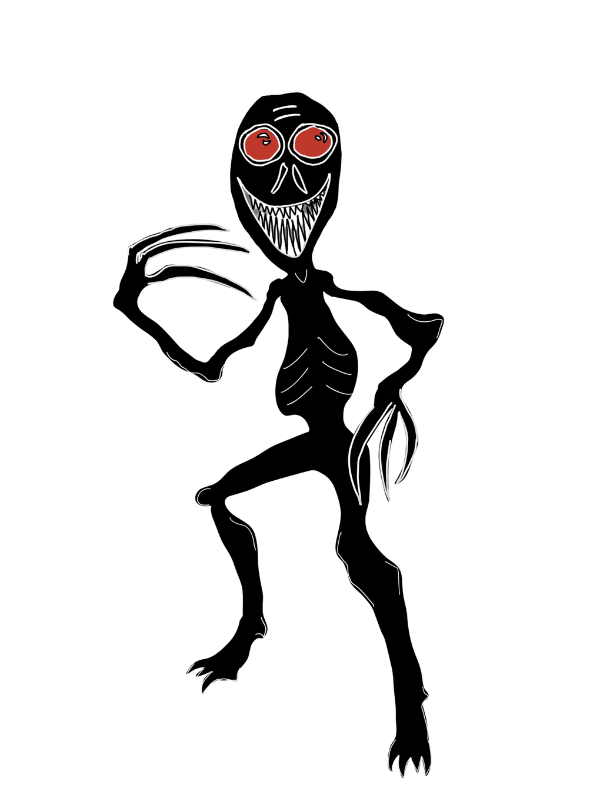

When the lights go out and the house falls quiet, some say El Cucuy begins to stir. He slips through shadows and tucks himself beneath beds, inside closets, and anywhere the dark runs deep. His glowing eyes are always watching, waiting, listening for the sound of restless footsteps or whispered bedtime secrets. Few claim to have seen him, but everyone knows the chill that creeps up your spine when the room is too quiet… that is when El Cucuy may be near.
El Cucuy (also sometimes spelled El Coco) is a figure from Spanish and Latin American folklore, often used in stories told to children to encourage good behavior. Research says this folklore began in the Iberian Peninsula, which is Portugal and Spain. The legend traveled from Spain to Mexico and other parts of Central and South America, changing a little in each culture along the way. The basic story is always the same: El Cucuy watches from the darkness and comes out at night to take away children who misbehave or refuse to go to bed. In many regions, parents sing lullabies warning that El Cucuy hears every cry and every whisper.
Descriptions of El Cucuy vary by region, but he is usually depicted as a small, hunched creature with glowing red eyes and sharp, jagged teeth. Some describe him with wild, tangled hair and long fingers used to snatch his victims. Other versions portray him as a shadowy figure that doesn’t have a clear shape at all, more like a living darkness hiding under the bed or inside the closet. Regardless of the form, El Cucuy is always associated with fear and the unknown.
El Cucuy stalks by culture and language. Most “sightings” of El Cucuy come from whispered stories, family warnings, and cultural traditions rather than reported encounters. If you are anywhere where people speak Spanish, you are especially in danger. El Cucuy likes to lurk in the dark, under beds, and inside closets.